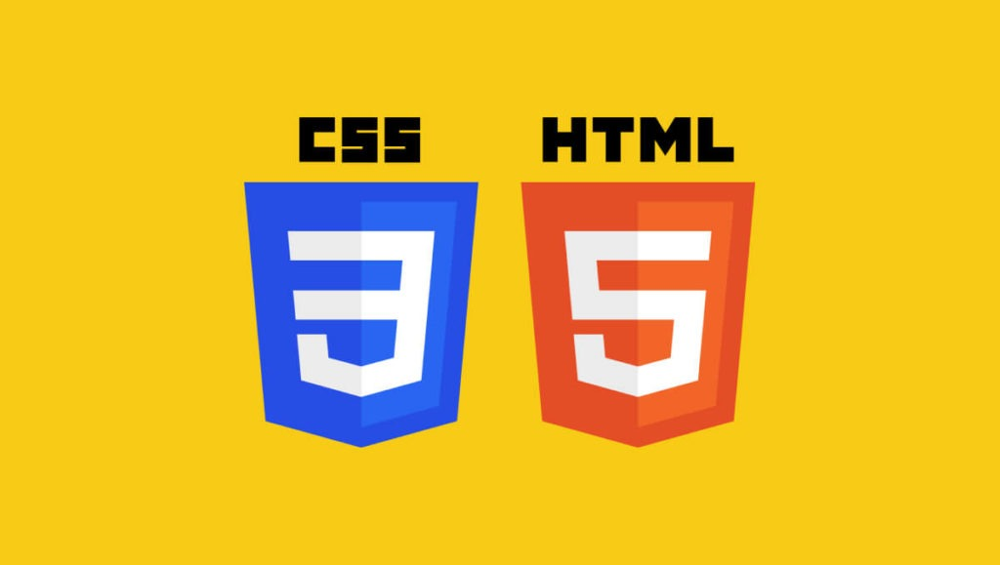

Desenvolvimento Frontend (FE)
HyperText Markup Language (HTML) & Cascading Style Sheets (CSS)

- Linguagem de marcação: Não é uma linguagem de programação, pois não possui lógica de programação, variáveis ou estruturas de repetição. Em vez disso, ele usa marcações para classificar o conteúdo.
- Hipertexo: Permite conectar páginas por meio de hiperlinks, formando a rede de navegação que conhecemos como a web
- Separação de conteúdo e design: Mantém o código mais limpo ao isolar a parte visual da estrutura do HTML
- Economia de tempo: Permite alterar o estilo de várias páginas de um site de uma só vez, modificando apenas um arquivo de estilos externo.
- Responsividade: Ajusta a aparência dos elementos para diferentes tamanhos de tela, como celulares, tablets e computadores.